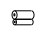
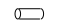
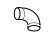
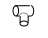

⬅ La ligne Lire les plans · tronc commun · après la gare 10 · pour le froid et la clim en cours de relecture
Gare 11 — Suivre une installation dans la maquette 3D
Bienvenue en gare
À la gare 9, vous avez appris à lire une maquette : tourner, cacher, cliquer, couper. Ici, vous cherchez une installation de chauffage, de ventilation ou de froid dans la maquette. Cette gare se vit sur poste informatique (environ 2 h), avec BIM Vision et la maquette fournie par l'enseignant. À la fin, vous saurez :
- repérer les équipements (unité, ventilo-convecteur, caisson, bouche) dans l'arbre des objets et dans la vue 3D ;
- suivre un réseau d'un bout à l'autre : tubes du fluide frigorigène, eau glacée, gaines d'air ;
- lire les propriétés d'un élément : son nom, son niveau, ses dimensions ;
- faire une vue en coupe pour voir ce qui est caché dans un plafond ou un plancher.
Prérequis : les gares 9 et 10 (naviguer, cacher, cliquer, couper ; lire un sujet). Cette gare est pensée pour le froid et la climatisation. Si ce n'est pas votre cas, passez à la suite de la carte.
Une installation, trois familles d'éléments
Dans une maquette, tout est un élément avec sa fiche. Une installation de CVC (chauffage, ventilation, climatisation) en contient de trois familles :
| Famille | Ce que c'est | Exemples |
|---|---|---|
| Les équipements | les machines : elles produisent, traitent ou diffusent |


|
| Les réseaux | les chemins qui relient les équipements : des tronçons de tube ou de gaine, bout à bout |
    |
| Les bouches | là où l'air entre dans la pièce ou en sort |


|
Un tronçon, c'est un morceau de tube ou de gaine entre deux raccords. Un réseau, c'est l'ensemble des tronçons qui relie des équipements.
Pictogrammes : collection QElectroTech (CC BY 3.0), adaptés par inerWeb — F. Henninot.
Repérer un équipement
Dans la maquette, l'arbre des objets (à gauche) range les éléments par étage et par famille. Pour trouver un équipement :
- ouvrez l'étage dans l'arbre, puis la famille qui ressemble à ce que vous cherchez (équipements, appareils, terminaux…) ; les noms dépendent de la maquette ;
- cliquez sur le nom : l'élément se colore dans la vue 3D ;
- pour le voir seul : ruban Objet, puis Masquer dans « Non sélectionnés » ;
- lisez son nom et son niveau, et notez-les.
Exemple résolu (didacticiel BIM Vision, maquette « Garage indépendant »). On cherche les fondations : arbre Projet, Site, Bâtiment, Étage (Plan de soubassement), Murs ; les fondations apparaissent en vert ; ruban Objet, Masquer dans « Non sélectionnés » : il ne reste que les fondations. Leur nom dans l'arbre : « Mur de base : fond 60 cm ».
Quand vous avez trouvé l'équipement, ajoutez-le à votre carnet (exercice, partie 4).
Les trois réseaux, et comment les reconnaître
| Réseau | Il transporte | Dans la maquette, vous reconnaissez… | Il va de… à… |
|---|---|---|---|
| Fluide frigorigène | le fluide qui fait le froid | deux tubes ronds côte à côte : le petit porte le liquide, le gros (souvent isolé) porte le gaz | l'unité extérieure vers l'unité intérieure |
| Eau glacée | de l'eau froide | deux tubes de même diamètre : l'aller et le retour | le groupe d'eau glacée vers les ventilo-convecteurs |
| Air | de l'air | de grosses gaines, rondes ou rectangulaires, avec des coudes et des tés | la CTA vers les bouches (soufflage), et des grilles vers la CTA (reprise) |
Chaque réseau se lit comme un train : du départ à l'arrivée, wagon après wagon.
CTA | → | gaine | → | coude | → | té | → | bouche |
Piège : un tube isolé paraît plus gros qu'il n'est. Le diamètre se lit dans les propriétés, pas à l'œil.
Suivre un réseau, pas à pas
- Le départ. Choisissez un équipement (CTA, unité extérieure, groupe d'eau glacée) et cliquez dessus. Notez son nom.
- Activez la « Sélection multiple » (ruban Dimensions).
- Cliquez les tronçons un par un, du départ vers l'arrivée : chacun touche le précédent. À chaque clic, notez son nom.
- L'arrivée. Arrêtez-vous à l'équipement ou à la bouche qui termine le réseau.
- Ruban Objet, Masquer dans « Non sélectionnés » : le réseau reste seul, vous le voyez de bout en bout.
- Quand vous avez fini, Effacer la sélection et revenez à la maquette entière.
Piège : deux tronçons qui se touchent à l'écran ne sont pas toujours raccordés. Tournez autour (orbite) et regardez sous plusieurs angles avant de les compter.
Lire les propriétés : quatre questions
Un clic sur un élément ouvre ses propriétés. Vous y cherchez quatre choses :
| Question | Où la trouver |
|---|---|
| Quoi ? | le nom et le type de l'élément |
| Où ? | le niveau (l'étage) ; parfois la pièce |
| Combien ? | les dimensions : longueur, diamètre ou section |
| De quoi ? | le matériau, le système auquel il appartient |
La maquette ne porte pas toujours toutes les propriétés. Si une dimension manque, vous la mesurez avec le menu Dimensions : Arête (longueur d'une arête), Sommet (distance entre deux sommets), Distance entre les surfaces, Surface, Volume. Le résultat s'affiche dans la partie « Résultat ».
Dans votre carnet, vous notez toujours si la valeur est lue (L) dans les propriétés ou mesurée (M) avec le menu Dimensions. Une valeur « à vue d'œil » ne s'écrit pas.
Faire une vue en coupe
Dans un bâtiment, les gaines et les tubes passent au-dessus du plafond et à travers les planchers : on ne les voit pas. La coupe les montre.
| Vous voulez… | Coupe à choisir |
|---|---|
| voir les gaines à plat, comme sur un plan | coupe horizontale (axe Z), placée à la hauteur du faux-plafond |
| voir comment un tube traverse un mur ou un plancher | coupe verticale (axe X ou Y), avec « Remplir la tranche » |
- Ruban Affichage, puis Coupe.
- Choisissez l'axe : + Z ou − Z pour une coupe horizontale ; ± X ou ± Y pour une coupe verticale.
- Cliquez sur + ou − pour déplacer le plan de coupe.
- Pour une coupe verticale, cliquez Remplir la tranche : les éléments coupés prennent une couleur.
- Recliquez Coupe pour revenir à la maquette.
Exemple résolu (didacticiel, garage) : coupe horizontale : Affichage, Coupe, axe + Z ; on descend ou on remonte le plan avec + et −. La coupe se place où vous voulez, pas à 1 m du sol comme un plan de niveau.
À quoi ça sert, de suivre un réseau ?
- Vérifier le passage. Une gaine peut traverser une cloison ou une poutre : la maquette le montre avant le chantier (gare 9).
- Compter. Longueurs de tube, nombre de coudes, nombre de bouches : les quantités se relèvent sur le réseau suivi.
- Préparer le chantier. Où percer, où poser les supports, où laisser un accès.
La maquette et le plan se complètent : ce que vous suivez en 3D, vous le retrouvez sur le plan d'implantation (ligne bureau d'études CVC, gare 1). Retrouvez toujours l'orientation : le nord du plan est le nord de la maquette.
Le test de la gare
Répondez à tout, votre score s'affiche en bas.
Terminus de la gare 11
Équipements repérés, réseau suivi du départ à l'arrivée, propriétés lues, coupe faite : vous savez consulter une installation dans une maquette.
📄 Télécharger la fiche de TP (PDF)
Pour l'enseignant : corrigé dans corrige.pdf. Le TP se fait sur poste avec BIM Vision. Il se fait sur la maquette de la gare 9 : un bâtiment, sans réseau CVC. L'élève applique la méthode (arbre, isoler, propriétés, sélection multiple, coupe) à des murs, portes et fenêtres. Si vous disposez d'une maquette IFC qui porte une installation, substituez-la : mêmes gestes, sur des équipements et des tubes.
Prochaine gare : la gare 12, croquer et relever une installation frigorifique. Pour la ligne bureau d'études CVC : la gare 1 de cette ligne, tracer le plan d'implantation.
Pictogrammes : collection QElectroTech (CC BY 3.0), adaptés par inerWeb — F. Henninot.